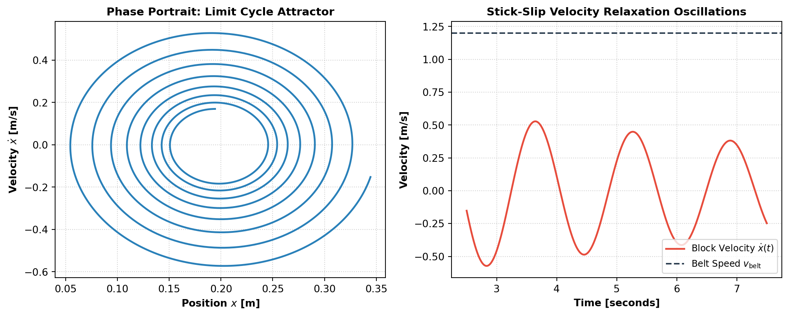

Frictional Forces, Tribology, and Non-Conservative Dynamics
From Coulomb’s empirical laws and microscopic asperity welding to fluid drag, rolling resistance, and stick-slip oscillations.
Physics
Mechanics
Tribology
Engineering
Author
Igor Kan
Published
September 8, 2026
Friction is often introduced in introductory physics as a nuisance—a non-conservative force that dissipates mechanical energy, wears down machinery, and complicates equations. Yet without friction, walking across a room, gripping a steering wheel, driving a car, lighting a match, or playing a violin would be physically impossible.
This article explores the multi-scale physics of friction: from classical empirical contact mechanics and microscopic tribology to fluid drag regimes, rolling resistance, and the nonlinear dynamics of stick-slip instability.
1. Classical Dry Friction: The Amontons-Coulomb Laws
Dry friction between solid surfaces is historically described by three empirical laws established by Leonardo da Vinci (1493), Guillaume Amontons (1699), and Charles-Augustin de Coulomb (1785):
First Law: The maximum force of static friction and the force of kinetic friction are directly proportional to the normal load \(N\): \[F_f \propto N\]
Second Law: The force of friction is independent of the apparent contact area between the sliding surfaces. (A brick resting on its wide face requires the exact same pulling force as when resting on its narrow edge).
Third Law (Coulomb’s Law of Kinetic Friction): Once motion is initiated, the kinetic friction force is largely independent of sliding velocity \(v\).
Static vs. Kinetic Regimes
Static Friction (\(f_s\)): A self-adjusting reactive force that opposes the initiation of motion. It matches the applied tangential force \(F_{\text{applied}}\) up to a critical threshold: \[\boxed{0 \le f_s \le \mu_s N}\] where \(\mu_s\) is the coefficient of static friction.
Kinetic Friction (\(f_k\)): Once the threshold is exceeded and relative motion begins, the resistive force drops to an approximately constant value: \[\boxed{f_k = \mu_k N}\] where \(\mu_k\) is the coefficient of kinetic friction.
For almost all material pairs, \(\mu_s > \mu_k\). The familiar sensation of an object “jerking free” upon initial movement is the macroscopic manifestation of this sudden drop.
The Angle of Repose and Friction Cone
Place a block on an incline of angle \(\theta\). Gravity resolves into: * Normal component: \(N = mg \cos\theta\) * Downhill shear component: \(F_\parallel = mg \sin\theta\)
At the critical angle \(\theta_c\) (the angle of repose) where slipping is impending: \[f_{s,\text{max}} = F_\parallel \implies \mu_s (mg \cos\theta_c) = mg \sin\theta_c \implies \boxed{\tan\theta_c = \mu_s}\]
This property governs the natural slope of granular piles (sand dunes, grain silos, gravel mounds) and provides a simple experimental method for measuring \(\mu_s\).
2. The Microscopic Origin of Friction: Tribology
Why is friction proportional to the normal load, yet completely independent of surface area?
In 1950, F. P. Bowden and D. Tabor showed that on microscopic scales, even mirror-polished surfaces resemble rugged mountain ranges. Contact occurs only at the highest microscopic peaks, called asperities.
Real vs. Apparent Contact Area
Let \(A_{\text{apparent}}\) be the macroscopic geometric area (e.g., \(10\text{ cm} \times 10\text{ cm} = 100\text{ cm}^2\)). The true contact area\(A_{\text{real}}\) is the sum of the tiny microscopic asperity contact junctions: \[A_{\text{real}} \ll A_{\text{apparent}} \quad (\text{typically } A_{\text{real}} \sim 10^{-4} A_{\text{apparent}})\]
At these minute contact points, the local pressure is immense—often exceeding the yield strength (hardness \(H\)) of the softer material. The asperities deform plastically until their collective area can support the total normal load \(N\): \[N = H \cdot A_{\text{real}} \implies A_{\text{real}} = \frac{N}{H}\]
The Adhesion Theory of Friction
Under this immense local pressure, atoms at the asperity tips undergo cold welding, forming adhesive chemical bonds across the interface. To initiate sliding, these microscopic welds must be sheared apart: \[F_f = \tau \cdot A_{\text{real}}\] where \(\tau\) is the shear strength of the junction bonds.
Comparing this with \(F_f = \mu N\) reveals the microscopic identity of the friction coefficient: \[\boxed{\mu = \frac{\tau}{H}}\]
This beautiful derivation explains both of Amontons’ laws simultaneously: 1. Increasing the normal force \(N\) increases the true contact area \(A_{\text{real}}\) linearly, proportionally increasing the number of cold welds that must be sheared. 2. Changing the macroscopic area \(A_{\text{apparent}}\) merely redistributes the same total normal force over more or fewer asperities; the total deformed contact area \(A_{\text{real}}\) remains unchanged.
3. Beyond Dry Friction: Fluid Drag and Rolling Resistance
Friction is not limited to solid-on-solid contact.
Fluid Friction (Drag)
When a body moves through a fluid (liquid or gas), the resisting drag force depends on the fluid’s density \(\rho\), dynamic viscosity \(\eta\), the object’s characteristic dimension \(r\), and its velocity \(v\).
Viscous / Stokes Drag (Low Reynolds Number, \(Re \ll 1\)): Dominated by fluid viscosity, laminar streamlines flow smoothly around the object: \[F_d = -b v = -6\pi \eta r v \quad (\text{for a sphere})\] A falling droplet of mass \(m\) reaches terminal velocity when \(mg = bv\): \[v_{\text{term}} = \frac{mg}{b} = \frac{2 r^2 g (\rho_{\text{body}} - \rho_{\text{fluid}})}{9\eta}\]
Inertial / Form Drag (High Reynolds Number, \(Re \gg 1000\)): Dominated by turbulent wake formation and momentum transfer to the fluid: \[F_d = -\frac{1}{2} \rho C_d A v^2\] where \(C_d\) is the dimensionless drag coefficient and \(A\) is the projected frontal area. Terminal velocity in air: \[v_{\text{term}} = \sqrt{\frac{2mg}{\rho C_d A}}\]
Rolling Resistance
Unlike sliding friction, ideal rolling involves instantaneous static contact with zero relative velocity at the contact point (\(v_{\text{contact}} = 0\)).
Real rolling resistance arises from inelastic hysteresis: as an elastic wheel (such as a rubber tire) rolls on a road, it deforms under the load \(N\). The material takes more force to compress at the leading edge than it pushes back with during expansion at the trailing edge. The net normal pressure distribution shifts forward by a small distance \(b_{\text{rr}}\), creating a counter-torque: \[F_{\text{rr}} = c_{\text{rr}} N = \frac{b_{\text{rr}}}{R} N\] For a steel train wheel on steel rail, \(c_{\text{rr}} \approx 0.001\), whereas for a highway car tire, \(c_{\text{rr}} \approx 0.01 - 0.015\). This explains why trains are vastly more energy-efficient for long-distance transport.
4. Nonlinear Dynamics: The Stick-Slip Phenomenon
Because \(\mu_s > \mu_k\), systems subject to elastic driving frequently exhibit stick-slip oscillations.
Consider a block of mass \(m\) pulled across a rough table by a spring of stiffness \(k\) attached to a motor moving at constant speed \(v_{\text{belt}}\):
Stick Phase: The block remains stationary (\(v = 0\)). The spring stretches, increasing tension \(F_s = k \Delta x\). As long as \(F_s < \mu_s N\), the static friction balances the spring force.
Slip Phase: The moment \(F_s = \mu_s N\), the block breaks free. Because kinetic friction immediately drops to \(\mu_k N < \mu_s N\), there is a sudden net forward accelerating force. The block accelerates forward, overshoots the equilibrium of the spring, and decelerates until its velocity matches the belt speed, where it “sticks” again.
This relaxation cycle is the fundamental physical mechanism behind: * Earthquakes: Tectonic plates stick until shear stress exceeds static fault friction, then slip catastrophically along fault lines. * Acoustics of Bowed Instruments: A violin bow hairs coated with rosin stick to the string, pulling it sideways until it snaps back, producing sustained musical tones. * Squeaking Brakes and Chalk Screech: High-frequency stick-slip vibrational cycles.
Code
import numpy as npimport matplotlib.pyplot as plt# Numerical simulation of a mass on a moving belt with Velocity-Dependent Friction# Equation: m x'' + c x' + k x = F_friction(v_rel)# where v_rel = v_belt - x'# We model friction using a smooth Stribeck-like transition from mu_s to mu_kt = np.linspace(0, 15, 3000)dt = t[1] - t[0]m =1.0k =15.0c =0.2v_belt =1.2mu_s =0.6mu_k =0.3g =9.81N = m * g# State variables: x (position), v (velocity)x = np.zeros(len(t))v = np.zeros(len(t))# Simple Euler-Cromer integration with smooth stick-slip friction modelfor i inrange(len(t) -1): v_rel = v_belt - v[i]# Friction force model: tanh transition near v_rel = 0# Stribeck friction curve: mu(v_rel) = mu_k + (mu_s - mu_k) * exp(-(v_rel/v_0)^2) v_0 =0.05 mu_eff = (mu_k + (mu_s - mu_k) * np.exp(-(v_rel / v_0)**2)) * np.tanh(v_rel /0.01) F_frict = mu_eff * N F_spring =-k * x[i] F_damp =-c * v[i] a = (F_spring + F_damp + F_frict) / m v[i+1] = v[i] + a * dt x[i+1] = x[i] + v[i+1] * dtfig, (ax1, ax2) = plt.subplots(1, 2, figsize=(11, 4.5))# Plot 1: Phase portrait (Limit Cycle)ax1.plot(x[500:], v[500:], color='#2980b9', lw=1.8)ax1.set_xlabel('Position $x$ [m]', fontsize=10, fontweight='bold')ax1.set_ylabel('Velocity $\dot{x}$ [m/s]', fontsize=10, fontweight='bold')ax1.set_title('Phase Portrait: Limit Cycle Attractor', fontsize=11, fontweight='bold')ax1.grid(True, linestyle=':', alpha=0.6)# Plot 2: Velocity vs Timeax2.plot(t[500:1500], v[500:1500], color='#e74c3c', lw=1.8, label=r'Block Velocity $\dot{x}(t)$')ax2.axhline(v_belt, color='#2c3e50', linestyle='--', label=r'Belt Speed $v_{\text{belt}}$')ax2.set_xlabel('Time [seconds]', fontsize=10, fontweight='bold')ax2.set_ylabel('Velocity [m/s]', fontsize=10, fontweight='bold')ax2.set_title('Stick-Slip Velocity Relaxation Oscillations', fontsize=11, fontweight='bold')ax2.grid(True, linestyle=':', alpha=0.6)ax2.legend(loc='lower right', frameon=True, fontsize=9)plt.tight_layout()plt.show()

Figure 1: Phase-space trajectory and time-domain velocity of a stick-slip oscillator (block on moving belt).
5. Thermodynamics and Non-Conservative Work
Because kinetic friction always acts opposite to the instantaneous relative displacement (\(d\mathbf{r}_{\text{rel}} = \mathbf{v}_{\text{rel}} dt\)), the work done by friction is strictly non-positive: \[W_f = \int \mathbf{f}_k \cdot d\mathbf{r}_{\text{rel}} = -\int f_k \, ds < 0\]
Unlike conservative forces, where work is stored as potential energy (\(W_c = -\Delta U\)) and can be 100% recovered, the work done against friction is irreversibly converted into microscopic internal thermal energy: \[\Delta E_{\text{thermal}} = -\Delta E_{\text{mechanical}} = \int f_k \, ds\]
By the Second Law of Thermodynamics, this increases the entropy of the universe (\(\Delta S = Q / T > 0\)), precluding perpetual motion of the third kind.